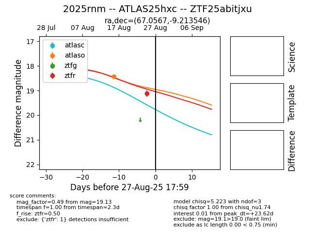

Target 2025rnm at 2025-08-27 17:59, see:
FINK: fink-portal.org/ZTF25abitjxu
Lasair: lasair-ztf.lsst.ac.uk/objects/ZTF25abitjxu
ALeRCE: alerce.online/object/ZTF25abitjxu
TNS: wis-tns.org/object/2025rnm
YSE: ziggy.ucolick.org/yse/transient_detail/2025rnm
alt names
ZTF25abitjxu (ztf,fink)
2025rnm (tns,yse)
ATLAS25hxc (atlas)
coordinates:
equatorial (ra, dec) = (67.0567,-9.21355)
galactic (l, b) = (204.3507,-35.93962)
photometry
last atlasc=18.40, atlaso=18.43, ztfr=19.13
1 atlasc, 6 atlaso, 1 ztfr detections
